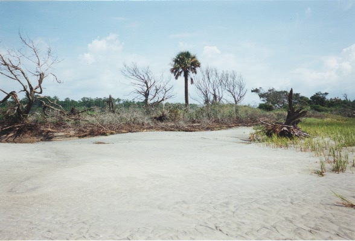
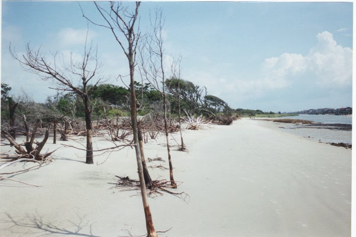
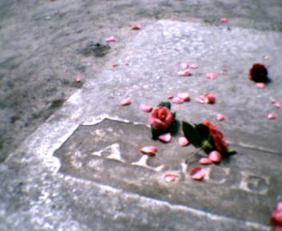

Пальма и полумесяц.
Сейчас никто уже не скажет точно, как выглядел Ларри Стивенс. Говорят,
это был высокий человек лет тридцати с длинными белокурыми волосами,
одевавшийся обычно в поношенную черную куртку. В начале пятидесятых
в аэропорту Гринвилла он держал одноместный самолет, раскрашенный
желтыми и черными полосами. Необщительный от природы, он сторонился
людей и большую часть своего свободного времени отдавал воздушным
прогулкам.
Тихим апрельским вечером самолетик Ларри в последний раз разбежался
по взлетной полосе аэропорта и, набирая высоту, скрылся в направлении
гор... Вот, собственно, и все что известно об этом человеке. Что случилось
потом не расскажет уже никто, хотя история не закончилась.
Утром следующего дня, когда другой самолет, принадлежавший лесничеству,
совершал облет горно-лесных территорий у подножия хребта Аппалачи,
на одном из склонов обнаружились желто-черные обломки. Авария случилась
недалеко от местечка Моди Спрингс, известного своими минеральными
источниками. Удар был такой силы, что части самолета разбросало
на огромной территории, а у пилота не было никаких шансов остаться в
живых. Тем не менее, срочно вызванная группа спасателей не обнаружила
Ларри Стивенса ни живого ни мертвого.
С тех пор прошло немало лет, но вот что удивительно! Священник из
Моди Спрингс охотно расскажет вам о самом необычном попутчике, которого
регулярно подвозят туристы, навещающие поселок.
В двух милях выше по сто седьмому шоссе имеется смотровая площадка
с которой открывается чудесная панорама окрестных гор. Дождливыми вечерами
странный человек, одетый в поношенную черную куртку просит подвезти
его до поселка. Человек не показывает своего лица, прикрывая его
поднятым воротником. Однако все отмечают густую шевелюру белых волос.
Странный попутчик ездит только от смотровой площадки до поселка или
обратно. Он никогда не благодарит, и, выйдя из машины, мгновенно исчезает
в дождливой мгле.
"А в первый раз это случилось сразу после аварии самолета" - задумчиво
добавляет священник.
Не случайно рассказ о Южной Каролине я начал с местной легенды. Предания
старины в сочетании с дикой пышной природой - то, что придает
этому штату неповторимый аромат грусти и романтики. Легенды будут
сопровождать нас и дальше, назаметно переплетаясь с картинами природы
и историческими фактами. Вот как описывает типичный южнокаролинский
пейзаж Эдгар По. Откроем начало его рассказа "Золотой жук":
" Много лет тому назад мне довелось близко познакомиться с некиим
Вильямом Леграном. Он происходил из старинной гугенотской семьи и был прежде
богат, но неудачи, следовавшие одна за другой, довели его до нищеты. Чтобы
избегнуть унижений, связанных с потерей богатства, он покинул Новый Орлеан,
город своих предков, и поселился на Сэлливановом острове, поблизости от
Чарлстона в Южной Каролине.
Это очень странный остров. Он тянется в длину мили на три и состоит
почти что из одного морского песка. Ширина его нигде не превышает четверти
мили. От материка он отделен едва заметным проливом, вода в котором с трудом
пробивает себе путь сквозь тину и густой камыш - убежище болотных курочек.
Деревьев на острове мало, и растут они плохо. Настоящего дерева не встретишь
совсем. На западной оконечности острова, где возвышается форт Моултри и
стоит несколько жалких строений, заселенных в летние месяцы городскими
жителями, спасающимися от лихорадки и чарлстонской пыли, - можно увидеть
колючую карликовую пальму. Зато весь остров, если не считать этого мыса на
западе и белой, твердой как камень, песчаной каймы на взморье, покрыт частой
зарослью душистого мирта, столь высоко ценимого английскими садоводами.
Кусты его достигают нередко пятнадцати - двадцати футов и образуют сплошную
чащу, наполняющую воздух тяжким благоуханием и почти непроходимую для
человека.
В сокровенных глубинах миртовой чащи, ближе к восточной, удаленной от
материка оконечности острова, Легран соорудил себе хижину, где и
обитал..."
От себя добавлю, что за последние двести лет на описанном острове ничего
не изменилось. Создается стойкое впечатление, что Америка просто напросто не
добралась до этих Богом забытых мест. Как иначе объяснить случай с
конфедератским флагом? Историю, которую я cейчас расскажу, можно было бы
счесть анекдотом, если б это не было чистой правдой.
В начале 2000 года, во время предвыборной кампании один из кандидатов
в президенты был потрясен, увидев, что над "белым домом" штата в городе
Коламбия развевается боевой флаг рабовладельческого юга. Вообще в Америке
имеется правило: правительственные здания несут два флага - флаг США и
флаг штата. В Южной Каролине оказалось три - флаг США, флаг штата,
изображающий пальму под полумесяцем на фоне ночного неба, и конфедератский
флаг с косым звездным крестом. В Вашингтоне также крайне удивились и
потребовали флаг снять. Но не тут то было. Выступивший по телевизору
губернатор заявил, что флаг снимать не будет, ибо тот висит легально,
официально, положен по закону штата. И началась тяжба на полгода.
Очень скоро скандальный флаг начал появляться в окнах домов, на крышах
автомобилей и даже на деревьях в лесу. Народ явно не спешил выполнять
высочайшее повеление. Мало того, на улицах Коламбии начали возникать
процессии людей, одетых в старинную военную форму. Все поголовно с
конфедератскими флагами. Организовали торжественную церковную службу,
посвященную жертвам гражданской войны, с поименным перечислением всех
погибших южнокаролинцев. Двадцать семь тысяч имен.
Но власть есть власть. Флаг все-же сняли. А кандидат c треском
провалился. Эта история свидетельствует о двух важных составляющих
южнокаролинской жизни. Первое - этот штат находится чертовски далеко
от центра. И второе - традиции юга здесь до сих пор не забыты.
Городов в Южной Каролине много, но по европейским понятиям это скорее
поселки. Столица штата - Коламбия, город в 80-тысячным населением,
о котором в общем-то нечего сказать, за исключением истории с флагом
конфедерации. Гринвилл - зимний курорт в предгорьях Аппалачей. Красивейшее
место. Ну и прибрежные города Чарльстон и Мертл Бич. О них я хочу рассказать
подробнее.
Чарльстон - город памятник, где от каждого камня веет историей. Мне он
очень напоминает Севастополь. Такая же гродская бухта и бульвар на
набережной. А вот и привычный авианосец у причальной стенки. И повсеместно
встречающиеся орнаменты выложенные пушечными ядрами. Правда вместо крымских
кипарисов вдоль улиц высятся вековые пальмы, что делает этот город похожим
на знаменитый Порт Роял из книжки "Одиссея капитана Блада". Ну, оно так
и должно быть, ибо город был основан французскими пиратами лет четыреста
назад. Даты на фасадах домов - само благородство - девятнадцатый,
восемнадцатый и даже семнадцатый век. Вот старинная береговая батарея,
а островок у горизонта - легендарный форт Самтер. В середине прошлого
века этот остров был обстрелян из пушек и вслед за этим грянула гражданская
война. Мемориальные таблички точно укажут вам, из каких пушек среляли.
Ну а уж памятников - наверное сотни и все посвящены истории флота и
гражданской войны. Но ни один не увековечивает ничего "северного".
Куда смотрит правящая партия - никому не ведомо. Хотя, памятуя историю
с флагом, можно предположить, что весть об этом еще не дошла до столицы.
В этом городе писал Эдгар По. Маргарет Митчел прогуливалась по здешней
набережной, проникаясь флюидами для работы над "Унесенными ветром".
Здесь снимали фильм "Патриот" с Мэлом Гибсоном. Рассказывают, что для
съемок перекрыли на несколько дней центральные улицы. А лошади так
все изгадили, что жителям прилегающих домов выдали по двести долларов
в качестве компенсации за неудобства.
И, наконец, одна из главных достопримечательностей в истории военного флота,
не только американского, но и вообще. Подводная лодка "Ханли".
Темной ночью 17 феврля 1864 года эта субмарина, принадлежащая южанам,
впервые в истории человечества атаковала и уничтожила вражеский корабль.
После атаки лодка отправилась на базу. С берега видели сигналы фонаря,
говорящие о том, что "Ханли" возвращается домой. И все ж до берега она
не добралась, а исчезла на полтора столетия в глубинах океана. Причины
неизвестны. И вот осенью 2000 года произошло чудо. Лодку обнаружили и
подняли! Сейчас она находится в специально созданном исследовательском
центре. На площади у городского музея установлена точная копия "Ханли".
Для удобства осмотра часть борта вырезана и можно заглянуть внутрь.
Хотите верьте, хотите нет, но лодка приводилась в движение мускульной
силой матросов, которые вращали гребной винт, пользуясь специальными
рукоятками.
Мертл Бич, миртовый берег, городок, вытянувшийся с севера на юг миль
на пятнадцать. Но если двигаться с востока на запад, его легко пересечь
пешком за полчаса. Дальше начинается дремучий сосновый лес и болотная топь.
Это один из главных курортов атлантического побережья. "Курортностью" и
объясняется то, что несмотря на изрядный размер, население города
составляет всего 30 тысяч человек. Все построено для туристов.
Грубо говоря, в Мертл Биче - всего одна улица, которая смотрится
вполне по-городскому, утыканная высотными коробками отелей.
Но чуть дальше от берега сразу начинаются сельского вида домики,
разделенные озерками и перелесками. В одном из таких домов, в местечке
с названием Перепелкино Болото и сидит сейчас автор этих строк.
В Мертл Биче есть одна школа, одна больница, один полицейский участок,
один аэропорт и гордость каждого горожанина, бейсбольная команда
"Мертл Бичевские Пеликаны", чемпион Южной Каролины. При всем этом
в городе имеется около двухсот церквей. Местные жители - народ набожный.
По этой причине, кстати, закон штата запрещает продажу спиртного по
воскресеньям. Считается, что добропорядочный южный каролинец в воскресенье
должен молиться Богу, а не пьянствовать.
Практически все жители города так или иначе связаны с курортным
бизнесом. Это работники ресторанов, отелей, всевозможных сувенирных
магазинчиков.
Когда-то в здешних местах находились тайные стоянки пиратских кораблей
Кидда и Черной Бороды.
Своим рождением Мертл Бич обязан железной дороге, которая в начале
двадцатого века пересекла непроходимую Южно-Каролинскую чащу и вышла к
океанскому берегу. Дорога эта уже много лет бездействует. Пути заросли
буйной зеленью, дав приют местным пьяницам. На крыше здания вокзала,
что в самом центре города, укоренилась и быстро растет небольшая
сосна. Местные власти мечтают когда-нибудь возобновить железнодорожное
сообщение с внешним миром, но не хватает денег. Выход видят в приватизации
дороги.
Порой в эту идиллию теплого берега вторгается то, что в
английском языке обозначается зловещим словом "харрикейн".
То самое чудище, упоминание которого заставляет машинально втянуть
голову в плечи. Кошмар, обозначаемый в картах, путеводителях, телефонных
книгах странным рисунком, напоминающим то ли диковинный цветок, то ли
нож мясорубки. В первых числах июня этот знак мелькает в программах
местных телеканалов, сопровождаемый тревожным напоминанием: "Сделайте
запас продуктов,воды,лекарств. Удожите вещи первой необходимости
в доступном месте -одеяла, теплые вещи,деньги, документы,фонарик...".
На автострадах нет- нет да и мелькнет дорожный знак с белым цветком
харрикейна и надписью "эвакуация".
Харрикейн - тропический ураган, блуждающий с июня по ноябрь над
Атлантикой. Всякий раз, приход его знаменуется наводнениями, жертвами,
снесенными с лица земли населенными пунктами. В каждой семье имеется
специальный набор на случай урагана, включающий вещи первой необходимости.
В случае объявления тревоги этот набор следует извлечь и отбыть в
эвакуацию.
В век современных технологий ураган предсказуем за неделю и более.
Конечно его фотографируют с космических аппаратов, рассчитывают
время и место прихода и все ж... Осенью 1999 года эвакуацию объявляли
дважды и все равно просчитались. Харрикейн пришел в соседний штат и
убил сто человек. За девяносто лет своего существования город
Мертл Бич был несколько раз полностью уничтожен ураганом. "Поэтому
наш город всегда молодой и красивый" - бодро заявляет брошюрка
местного бюро путешествий - "приезжайте в отпуск, на пожалеете!".
А вот другое коварное явление, которое предсказывать еще не научились.
Торнадо. В тот летний день я был, как обычно, на работе. После полудня солнце
внезапно померкло, скрытое странной черно-желтой тучей. Засверкали
молнии и полил дождь. Ничего особенного, летние грозы в здешних местах -
явление заурядное, вот только туча необычного цвета. Минутой позже по всем
здании, где я работаю, отключился свет. С улицы донеслись крики.
Заинтересованный, я выскочил на улицу. Люди стояли под проливным дождем,
завороженно подняв головы. Небо по краям оставалось девственно голубого
цвета, а облако, рыжеватое по краям постепенно чернело к ценру. Нижняя часть
тучи прогнулась воронкой и оттуда к земле тянулся змеящийся щупалец. Минутой
позже воздух наполнился воем машин скорой помощи и полиции.
Сотрудники компании дружно кинулись по домам, ибо телефон тоже отключился
и не было никакой информации, где прошел вихрь и какие он оставил
последствия. В тот день город отделался десятком легко раненных. Могло
быть гораздо хуже. На центральной улице торнадо поднял в воздух и перевернул
городской автобус. За несколько секунд до этого люди из него успели
выскочить и броситься наутек.

Давным-давно, еще до гражданской войны, на острове Полейс жил богатый
плантатор. Вот уже несколько лет его дочь по имени Джейн ждала своего
жениха, который совершал путешествие по Европе. Молодого человека звали
Бьюрегард. Изо дня в день девушка выходила к краю болота, что прилегает
к острову и подолгу смотрела на дорогу, соединяющую остров с большой землей.
В один из дней, наконец, пришло известие что Бьюрегард уже в Америке и
должен приехать завтра. Вся семья с нетерпением ждала следующего утра.
В доме навели праздничный порядок, украсили цветами и гирляндами. Джейн
приготовила любимые кушанья своего жениха.
Вечерело. Бьюрегард и его слуга не щадя лошадей скакали к острову.
Скорей, скорей! Зачем завтра, если можно приехать сегодня. Разгоряченные
молодые люди громко кричали и смеялись. Жизнь казалась прекрасной.
Особенно радовался Бьюрегард. Еще бы! Через час-другой он увидит,
наконец, свою невесту. Он молод, он богат, он счастливейший из смертных.
Чтобы не терять понапрасну время, всадники свернули с извилистой дороги
и помчались напрямую через болото. Сквозь ночной туман все ближе и ближе
мерцали огни плантаторского дома.
И вдруг случилось беда. На всем скаку лошадь споткнулась.
Бьюрегард вылетел из седла и упал в зыбучий песок. Напрасно его слуга
метался неподалеку. Он ни чем не мог помочь. Поблизости не было ни
веток ни бревен. Через несколько мгновений песчаная жижа сомкнулась над
головой Бьюрегарда.
Джейн плакала несколько дней, а потом, к великому недоумению родственников
стала опять ходить к болоту. Все - неправда, решила она. Это ошибка,
недоразумение. Конечно Бьюрегард жив и скоро приедет. В один хмурый
пасмурный день, когда ветер с болот гнал клочья тумана, странная
фигура возникла на вершине одной из дюн. Человек был одет в серое и
всем своим обликом напоминал... он напоминал... ну конечно, это он!
Внезапно фигура была скрыта туманом, а когда он рассеялся, на дюне
никого уже не было.
В ту ночь Джейн видела странный сон. Она плыла в лодке среди штормящего
моря. А с берега, с одной из дюн, серый человек махал ей рукой и что-то
кричал. Но слова терялись в шуме волн.
Утром, когда Джейн рассказала семье про серого человека, отец понял,
что его дочь от горя помутилась рассудком и решил отвезти ее в Чарльстон
к доктору. Поехали втроем - сам плантатор с женой и дочерью. Когда
вся семья была в поездке, жестокий ураган обрушился на побережье, уничтожив
все дома на острове и убив множество людей.
Джейн поняла тогда, душа Бьюрегарда в обличьи серого чловека предупреждала
ее об опасности и, таким образом, спасла всю семью.
С той поры, когда случились эти события, прошло лет двести. Неоднократно
остров Полейс становился жертвой очередного урагана. Но, рассказывают,
каждый раз перед этим странный человек, одетый в серое, приходит с болот.
Он стучится в дома и умоляет уехать с острова.

Южнее Мертл Бича, но севернее Чарльстона лежат земли графства Джоржтаун.
Первые испанские переселенцы высадились здесь в 1523 году. Но колония
просуществовала недолго. Все люди вымерли от неизвестной болезни.
Двести лет спустя в устье одной из рек возник английский город Джоржтаун,
давший название графству. В наши дни этот городок с десятитысячным
населением выглядит удручающе. Несколько пыльных улочек, ржавая водокачка
и старинный, кошмарного вида завод, извергающий в небеса клубы желтого
дыма. Прилегающие земли с самолета выглядят, как уходящий к горизонту
лабиринт рек, островов. И никаких признаков цивилизации. Но так было
не всегда. Невероятно, но двести лет назад здесь существовал крупнейший
культурный и хозяйственный центр аристократического юга. В девятнадцатый
век Южная Каролина вступила, будучи самым богатым штатом США. Сейчас,
в двадцать первом веке, это самый бедный штат. Гражданская война нанесла
такой удар местной экономике, что она никогда уже не смогла подняться.
Плантации графства Джоржтаун некогда были известными мировыми
экспортерами риса и краски "индиго". Что ж осталось в наши дни? Для того
чтобы добраться в самое сердце бывших плантаций потребуется несколько
часов на моторной лодке. Никакой другой транспорт вас сюда не доставит.
Бесконечно можно петлять по рекам, речушкам, каналам поражаясь величию
местной природы. Наверное на некоторых островах не ступала вообще нога
человека. Ведь высадиться на берег - большая проблема. Лес начинается
уже в воде и пристать к суше невозможно. Добираться вплавь - дело
рискованное, ибо здешние реки кишат аллигаторами, этими симпатичными
американскими крокодилами. Рассказывают, туристическая группа из
Пенсильвании решила понырять здесь с аквалангами и обследовать недавно
найденный затонувший корабль конфедератов. На практике вся экспедиция
обернулась войной с крокодилами и вызовом группы спасателей.
Аллигаторы - одна из достопримечательностей штата. Одно время они
уничтожались из за ценной кожи, но сейчас находятся под охраной государства.
Аллигатор опасен обманчивостью повадок. Глядя на эту неуклюжую трехметровую
рептилию, с трудом волокущую по траве толстый живот и часами лежащую
на солнышке, кажется что можно безопасно подойти и дернуть ее за хвост.
Но нет опасней заблужденья. Всем знакомо проворство и стремительность
ящерицы. Крокодил - та же ящерица, увеличенная до чудовищных
размеров и он столь же молниеносен. Бегущий аллигатор поднимается
на четыре лапы, не касаясь земли телом. Хвост для удобства торчит
вверх, как у скорпиона.
Одна единственная атомобильная дорога проходит по краешку этих мест.
Сквозь буйство субтропического леса тут и там угадываются брошенные
много лет назад дома. Легенды рассказывают, где-то здесь есть дом,
из которого по ночам доносится грустная песня. В доме никто не живет.
Это поет висящий на стене старинный портрет.
Нет-нет да и мелькнет на обочине полуразрушенная кирпичная арка с едва
заметной надписью "Плантация такая-то". И аллея вековых дубов, уводящая
во тьму леса. Сейчас уже и не разберешь, какие деревья посажены
человеческой рукой, а какие выросли сами. Везде лежит печать запустения и
упадка.
Как-то раз я решил пройтись по одной такой боковой дороге. Собственно,
дороги уже не было. Старинная просека, почти уже исчезнувшая в молодой
сосновой поросли. Сколько ж лет здесь не ездили?
Через минуту-другую я вышел к большому деревянному дому у тихой заводи.
Перед входом - две старые пальмы. Затонувшая лодка, все еще
привязана к небольшому причалу. А сам причал такой гнилой, что несомненно
рухнет, если на него встать. В дом заходить не решился, уж больно мрачно
выглядит.
Вечером того же дня я слег с высокой температурой. Как тут не уверовать
в призраков старого дома, которые отомстили за потревоженный покой.

Из всех привидений графства Джоржтаун наиболее знаменита Элис.
Множество легенд на разный манер рассказывают историю молодой девушки,
чей призрак бродит в старинном плантаторском доме в поисках потерянного
кольца.
Элис Белин Флэгг единственная дочь владельца великой плантации
Уотчесоу с рождения была предназначена в жены выходцу из другого
знатного плантаторского рода. После смерти отца ее старший брат
доктор Аллард Флэгг взял на себя ответственность за будущее своей
младшей сестры. То, что Элис должна выйти замуж за кого-либо из
плантаторов, было вне всяких сомнений. В те времена молодые люди
вступали в браки только с кем-нибудь из своего круга. В возрасте
пятнадцати лет наивная и жизнерадостная Элис влюбилась в молодого
столяра - мебельщика. Крайне раздраженные этим, брат и мать выслали Элис
в Чарльстон для учебы в закрытом пансионе. Незадолго до этого столяр
подарил девушке кольцо и она, чтобы не злить родственников носила, его
спрятанным на груди, на веревочке.
Элис, разрываемая между волей семьи и собственными чувствами, была
вынуждена уехать. Учась в пансионе она ничем не выделялась среди
своих сверсниц. Как и подобало молодой леди ее круга она посещала
официальные общественнае мероприятия, как, например, ежегодный балл.
Она, конечно, знала что брат и мать расчитывают на то, что она
встретит какого-нибудь молодого человека и позабудет свое первое
увлечение. Но Элис была верна своей любви и пронесла ее через все
годы пребывания в пансионе. Время обучения подходило к концу.
Девушка намеревалась вернуться домой и выйти замуж за своего
возлюбленного. К сожалению, годы проведенные в тоске, вдали от дома
сказались не ее здоровье и Элис сильно заболела.
Срочно вызванный брат решил немедленно везти ее домой, в имение
на берегу залива Мареллс. Путешествие было долгим и оказалось роковым
для больной. Когда Аллард положил ее на кровать в родном доме, Элис
была уже без сознания. Будучи врачом, брат осмотрел ее и обнаружил
кольцо, спрятанное на груди. Он с раздражением порвал веревку и
и вышвырнул кольцо в окно. Внезапно Элис очнулась, машинально начала
нащупывать кольцо и обнаружила, что ее талисман исчез. Последние ее
слова были обращены к брату с мольбой найти пропавшее кольцо.
Элис была временно похоронена рядом с родовым имением. Когда приехала
мать, бывшая в это время в другом штате, отслужили панихиду и перезахоронили
тело на территории епископальной церкви Всех Святых, что на острове
Полейс. На могильной плите написали только одно слово "Элис".
Соглано традиции Аллард настоял на том чтобы не указывать фамилию
умершей ибо по тогдашним понятиям она опозорила семью.
С тех пор ее много раз втречали у железных ворот кладбища церкви
Всех Святых. Многие люди, бывавшие в имении, видели Элис в ее спальне.
Она всегда появляется в белом одеянии, напоминающем то ли подвенечное
платье, то ли саван. Она всегда ищет потерянное кольцо...
Жаркой ночью я стою на океанском берегу у самой кромки прибоя, слушая
жестяной шорох пальмовых ветвей. Красноватый месяц поднялся где - то
над Бермудами и лежит на боку, напоминая кораблик. Живые символы.
Я заканчиваю рассказ о Южной Каролине. Прошлое этого штата было громким и
пышным. Будущее вырисовывается смутно, хотя, как знать, господа, как знать...
Март 2002, Мертл Бич.
На снимках:
1-2. Песчаное болото у острова Полейс.
3. Могила Элис.
Фото автора.
Назад|На главную